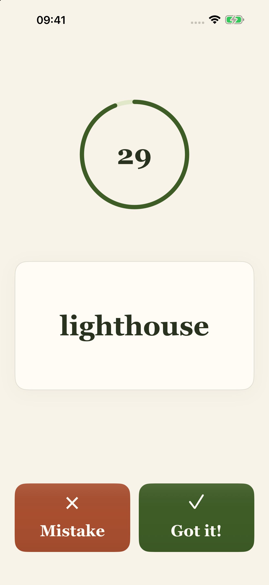
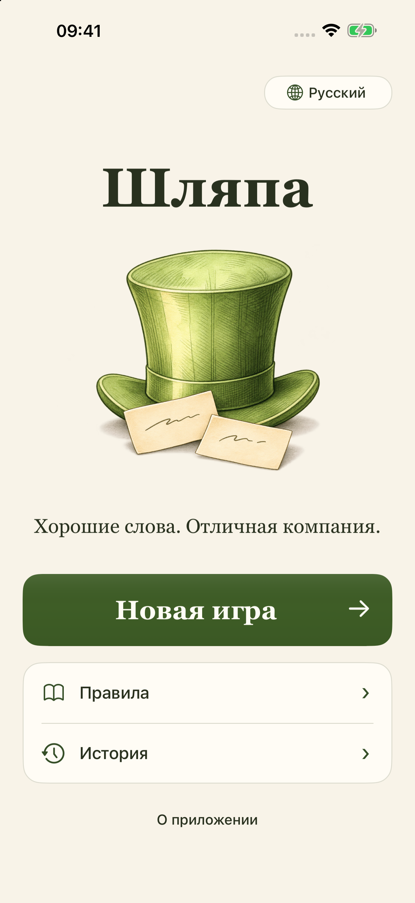
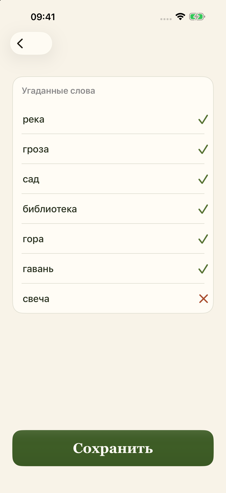

<!doctype html><html lang="en"><meta charset="utf-8"><meta name="viewport" content="width=device-width,initial-scale=1"><title>The Hat — Warm Modern</title><style>
*{box-sizing:border-box}body{margin:0;background:#f8f3e8;color:#29311f;font:16px -apple-system,BlinkMacSystemFont,sans-serif;padding:40px 28px}main{max-width:1900px;margin:auto}header{display:flex;justify-content:space-between;align-items:center;gap:24px;margin-bottom:32px}h1{font:700 40px Georgia;margin:0 0 8px}p{color:#65685a;margin:0;line-height:1.6}a{color:#354e27}header a{white-space:nowrap;text-decoration:none;border:1px solid #dddccf;border-radius:99px;padding:14px 20px}.screens{display:grid;grid-template-columns:repeat(5,minmax(170px,1fr));gap:24px;overflow:auto;padding-bottom:20px}figure{margin:0}img{display:block;width:100%;border-radius:24px;border:1px solid #dddccf}figcaption{font-size:15px;text-align:center;padding:16px 0}summary{font:700 24px Georgia;cursor:pointer;margin:24px 0}footer{margin-top:28px;border-top:1px solid #dddccf;padding-top:20px;font-size:14px}@media(max-width:700px){body{padding:24px 16px}header{display:block}header a{display:inline-block;margin-top:20px}.screens{grid-template-columns:repeat(5,240px)}h1{font-size:32px}}
</style><main><header><div><h1>The Hat / Warm Modern</h1><p>Только UI · исходный UX сохранён · English &amp; Русский</p></div><a href="../01-warm-modern.png">Визуальный референс ↗</a></header><div class="screens"><figure><a href="en/01-menu.png"></a><figcaption>Home</figcaption></figure><figure><a href="en/02-settings.png"></a><figcaption>Set up</figcaption></figure><figure><a href="en/03-preparation.png"></a><figcaption>Handoff</figcaption></figure><figure><a href="en/04-round.png"></a><figcaption>Play</figcaption></figure><figure><a href="en/05-results.png"></a><figcaption>Review</figcaption></figure></div><details><summary>Русский</summary><div class="screens"><figure><a href="ru/01-menu.png"></a><figcaption>Home</figcaption></figure><figure><a href="ru/02-settings.png"></a><figcaption>Set up</figcaption></figure><figure><a href="ru/03-preparation.png"></a><figcaption>Handoff</figcaption></figure><figure><a href="ru/04-round.png"></a><figcaption>Play</figcaption></figure><figure><a href="ru/05-results.png"></a><figcaption>Review</figcaption></figure></div></details><footer><p>Скриншоты работающего приложения на iPhone 17 Pro Max. Нажмите на экран, чтобы открыть в полном размере.</p><p>Проверено: прежние удержания для старта и ошибки, ручное открытие проверки слов, исходные элементы настройки и переходы. Паузы на игровом экране нет.</p><p>Иллюстрация: <a href="../../../thehat/Images.xcassets/WarmHat.imageset/hat.png">WarmHat</a> · <a href="../03-hat-illustration-prompt.txt">Промпт встроенного imagegen</a></p></footer></main></html>